Besondere Lernleistung Philosophie
Die Gödelschen Unvollständigkeitssätze und der epistemische Determinismus

selbstbezug · illustration
Dieser Satz ist nicht beweisbar.
Illustration, keine echte Gödelnummer. Kodiert wird hier nur spielerisch: Jedes Zeichen wird durch seinen Unicode-Codepunkt ci ersetzt und die Folge als Produkt von Primzahlpotenzen 2c₁·3c₂·5c₃·… geschrieben.

gliederung · kapitel und abschnitte
Der Gang der Arbeit
Abschnitte mit Einträgen im Archiv sind verlinkt.

archiv · quellen · prämissen · glossar · prompts